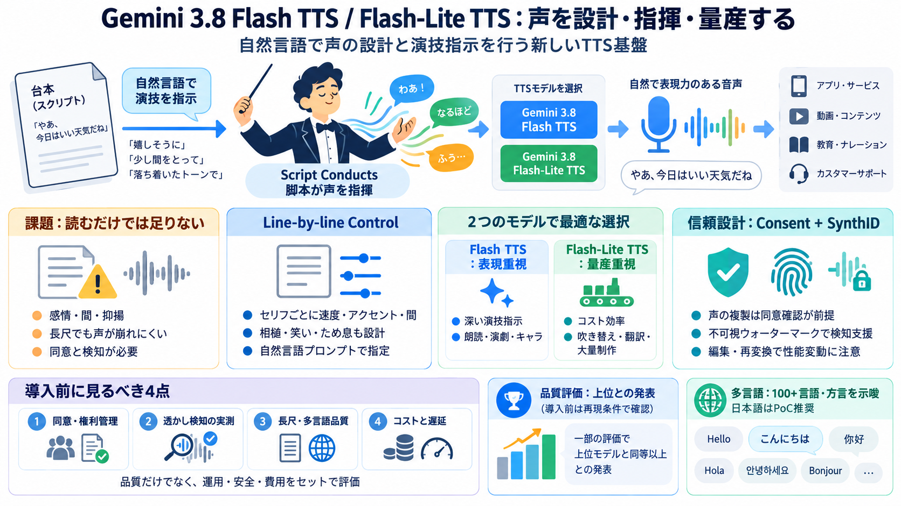

Google Rolls Out Gemini 3.8 Speech Models In API And AI Studio
On evaluations, Google reported that Gemini 3.8 Flash TTS took the top overall position on Hume AI’s Voice Design Benchm…

On evaluations, Google reported that Gemini 3.8 Flash TTS took the top overall position on Hume AI’s Voice Design Benchm…
For developers, the practical takeaway is that Gemini 3.8 Live and Extended Thinking are usable today through the Gemini…
Google says Flash TTS took first place on Hume AI’s Voice Design Benchmark, with a score of 71.4. It says Flash TTS and …
Bar chart comparing AI performance on Harvey's Legal Agent Benchmark. Gemini 3.8 Flash leads with 10.0%, followed by Gem…
Gemini 3.8 Live Extended Thinking provides enterprise-grade task completion and intelligence, capturing the #1 overall s…